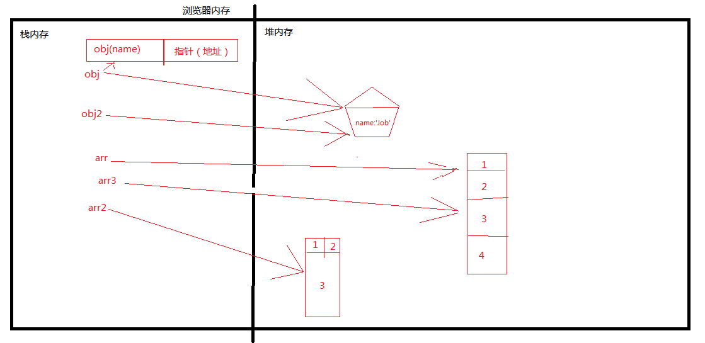

对于深浅拷贝这块，很早很早就有想法说整理一下这块的东西了，可是鉴于自己的菜鸟水平对这里确实是有点模糊的，实际在内存里面的存储什么的都是似懂非懂的状况，也一直没敢起手写，终于准备了一段时间，有点眉目了，今天就把这块的东西我理解的深度范围内归纳总结一下，是归纳总结的同时也是重新系统的学习的过程，有描述错误的地方请大佬不啬赐教。
现在有这样的一个需求，从服务端得到一组基础数据，然后需要修改得到的这份数据，但是同时也需要用到之前未改动的数据，所以有下面代码：
//这是从服务端接收到的数据
var obj = {
};
//这是我拷贝得到的数据
var objchange = obj;
//接下来我需要修改年龄
objchange.age = 27;
//好了，我修改完了，按照常规我所期望的就是，obj.age的值是25，而objchange.age的值是27，这是我所需要的结果，可是。。。。
//结果并不是这样obj.age的值也变成了27，好了接下来我们就开始我们的深浅拷贝的研究了。
所谓的深浅拷贝就是进行复制，那么之间的区别主要在于复制出来的新对象和原来的对象是否会互相影响，也就是上面例子中的，改一个，另一个也会改变，另一个改变的话那就是浅拷贝，反之就是深拷贝。那么下来我们就从原理来解释下深浅拷贝。
ECMAScript中的变量类型分为两种：
1.基本类型：undefined，null，Boolean，String，Number。
2.引用类型：大的分的话就是object类型，细的分的话那就有Object类型，Array类型，Date类型，Function类型等。
基本数据类型保存在栈内存，栈内存中分别存储着变量的标识符以及变量的值。
例如这段代码的存储：
var a = '字符串';
var b = 123409;
基本类型的复制时，相当于把值也一并复制给了新的变量比如：
var a = 1;
var a2 = b;
console.log(a === a2);
console.log(a == a2);
a = 0;
console.log(a);
console.log(a2);
引用类型保存在堆内存中，栈内存存储的是变量的标识符和对象在堆内存中的存储地址，当需要访问引用类型的值时，首先从栈中得到该对象的指针（地址），然后再从对应的堆内存中获取所需要的数据。下面的代码的存储：
var obj = {
}
var obj2 =obj;
var arr = [1,2,3,4];
var arr2 = [[1,2],3];
var arr3 = arr;

引用类型的复制时，实际上只是复制了指向堆内存的地址给了新的变量，也就是原来的变量与复制的新变量指向了同一个地址。
例如：
var obj = {name:"jack",age:20};
var obj2 = obj;
console.log(obj === obj2);
obj.age = 30;
console.log(obj);
console.log(obj2);
明白的深浅拷贝以后，对于仅仅是复制了指针的，也就是说复制了之后，原来的变量和新的变量指向同一个地址，彼此各自操作会影响对方的就是浅拷贝。反之，是在堆中重新分配内存，拥有不同的指针，但是值是一样的各自操作也不会影响对方的是深拷贝。
我们常用的数据类型对象和数组的深拷贝改如何去实现呢？
下面提供两种方法：
1.利用递归实现深拷贝，对属性中所有引用类型的值进行遍历，直到是基本类型为止。
例如：
function deepClone(source){
}
有实际操作的可以实践下，测试下这个方法的健壮性。
这个方法一眼就能看出来也只是处理对象和数组的，首先function类型没有处理，类型用typeof和instanceof也不完全靠谱等。
2.JSON 对象的 JSON.parse() 和 JSON.stringify().但是这个方法也不是全部的能实现的，例如对象中有一些不安全的值（undefined，function，symbol等）就无法实现了，好奇的同学可以测试下。
下面说下数组中的slice 和 concat方法：
两者都会返回一个新的数组实例，例如：
var a = [1,2,3];
var b = a.slice(); //slice
console.log(b === a);//false
a[0] = 0;
console.log(a);//[0,2,3]
console.log(b);//[1,2,3]
var c = [1,2,3];
var d = c.concat(); //concat
console.log(d === c);//false
c[0] = 0;
console.log(c);//[0,2,3]
console.log(d);//[1,2,3]
看样子是深拷贝呢，的确很有迷惑性，但是答案是否定的，Array 的 slice 和 concat 方法 他们在拷贝的时候，第一层的时候都是深拷贝，但是到了第二层之后就是浅拷贝了，例如下面例子：（在jQuery中也提供了一种深拷贝的方法，extend同样也可以实现）
var a = [[1,2,3],4,5];
var b = a.slice();
console.log(a === b);
a[0][0] = 6;
console.log(a);
console.log(b);
暂时就说到这，其实还有个最重要的问题是：有没有一个完美的方式处理好深拷贝的问题呢？后续会补充的。